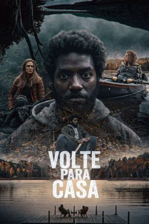
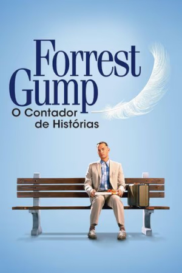
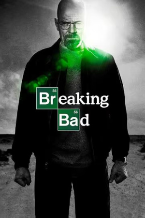
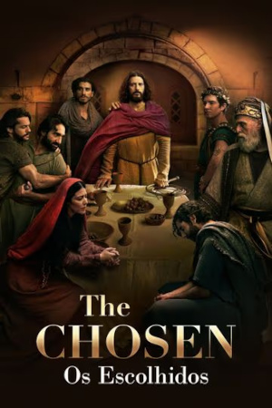

Um casal abandona sua vida em Nova York após herdar uma casa isolada nas montanhas. Eles buscam tranquilidade, até descobrirem um espírito sombrio que habita a floresta.
O alemão Oskar Schindler viu na mão de obra judia uma solução barata e viável para lucrar com negócios durante a guerra. Com sua forte influência dentro do partido nazista, foi fácil conseguir as autorizações e abrir uma fábrica. O que poderia parecer uma atitude de um homem não muito bondoso, transformou-se em um dos maiores casos de amor à vida da História, pois este alemão abdicou de toda sua fortuna para salvar a vida de mais de mil judeus em plena luta contra o extermínio alemão.

Quarenta anos da história dos Estados Unidos, vistos pelos olhos de Forrest Gump, um rapaz com QI abaixo da média e com boas intenções. Por obra do acaso, ele consegue participar de momentos cruciais, como a Guerra do Vietnã e o Caso Watergate, mas continua pensando no seu amor de infância, Jenny Curran.

Ao saber que tem câncer, um professor passa a fabricar metanfetamina pelo futuro da família, mudando o destino de todos.
Nesta versão moderna dos livros de Sir Arthur Conan Doyle, o excêntrico Sherlock usa inteligência, psicologia e intuição para interpretar pistas.

Aprofundando-se nas histórias de fundo e no contexto das pessoas e eventos dos evangelhos, a Primeira Temporada do projeto de mídia de maior financiamento coletivo pelo público de todos os tempos apresenta pessoas como Simão Pedro, Nicodemos, Maria Madalena, Mateus e, claro, Jesus de uma forma nunca antes vista em filme.